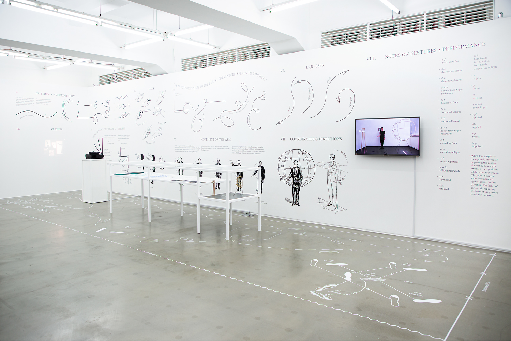
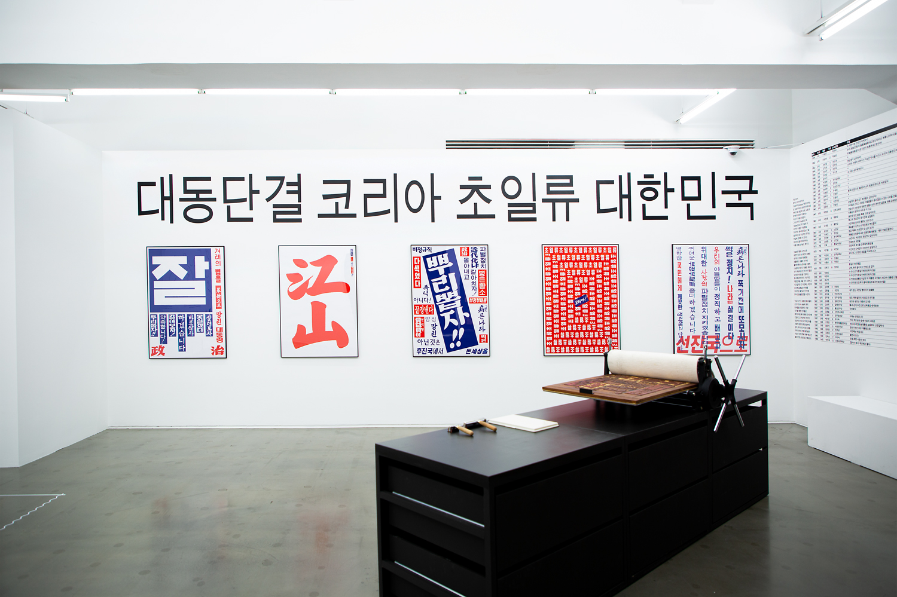
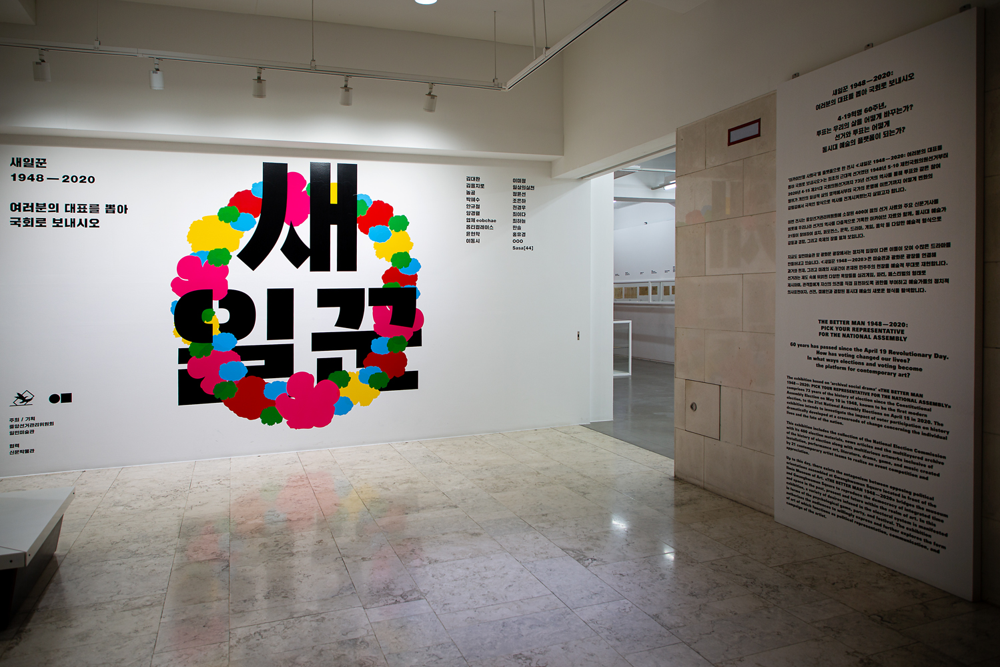
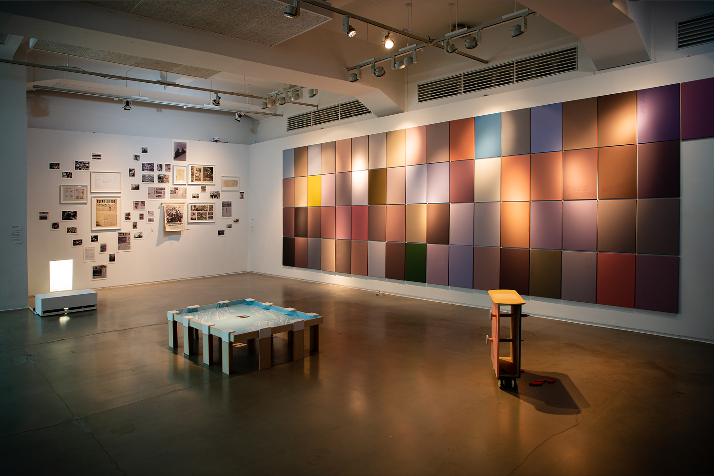
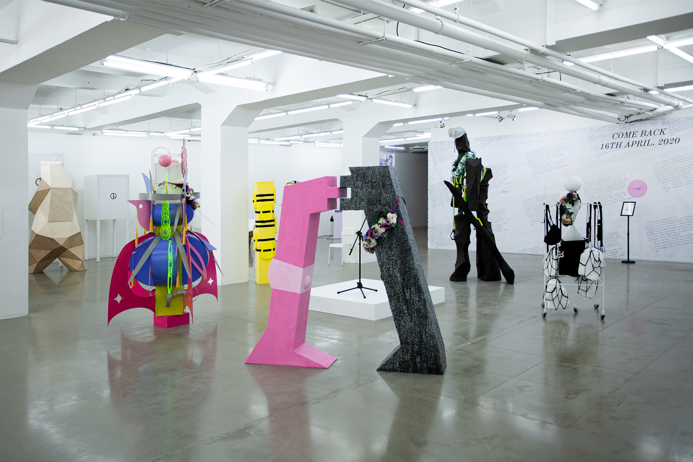

《새일꾼 1948-2020 :
여러분의 대표를 뽑아 국회로 보내시오》
2020.03.24(화) – 2020.06.21(일) *매주 월요일 휴관
무료
일민미술관, 신문박물관 전관
일민미술관, 중앙선거관리위원회
신문박물관
김대환, 김을지로, 놀공, 박혜수, 안규철, 양경렬, 업체eobchae, 옵티컬레이스, 윤현학, 이동시, 이미정, 일상의 실천, 정윤선, 조은하, 천경우, 최이다, 최하늘, 한솔, 홍유경, OOO, Sasa[44]





아카이브형 사회극'을 플랫폼으로 한 전시《새일꾼 1948-2020》은 최초의 근대적 선거였던 1948년 5.10 제헌국회의원선거부터 오는 2020년 4월 15일에 개최될 제21대 국회의원 선거까지 73년 선거의 역사를 통해 한국 근대사회의 근간을 이룬 선거의 의미를 되돌아보며, 투표와 같은 참여의 행위가 개인의 일상적 삶의 영역에서부터 국가적 운명에 이르기까지 어떻게 변화의 갈림길에서 극적인 방식으로 역사를 전개시켜왔는지 살핀다. 이번 전시는 중앙선거관리위원회에 소장된 300여 점의 선거 사료와 주요 신문기사를 비롯해 우리나라 선거의 역사를 다층적으로 기록한 아카이브 자료와 함께, 동시대 예술가 21팀이 참여하여 설치, 퍼포먼스, 문학, 드라마, 게임, 음악 등 다양한 예술적 형식으로 갈등과 경합, 그리고 축제의 장을 펼쳐 보인다.
지금도 광화문 광장에서는
정치적 입장이 다른 이들이 모여
수많은 드라마를 만들어낸다.